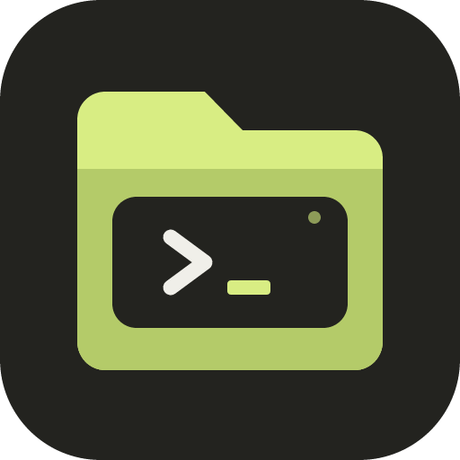
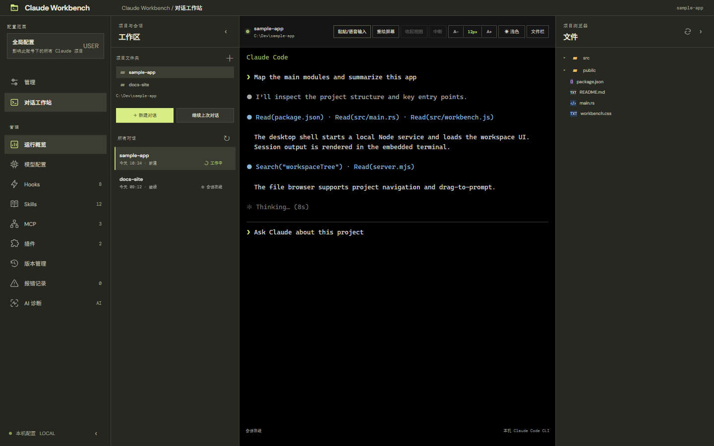

01 / CONFIGURE
配置有处可寻
集中查看模型、Hooks、Skills、MCP、插件和诊断信息，常用设置不必再逐层翻目录。

Claude Workbench桌面工作台配置、项目、会话和文件，不再散落在多个窗口。Claude Workbench 为 Windows 上的 Claude Code 整理出一处清晰、顺手的工作空间。

把日常要找的配置入口、项目文件和 CLI 会话放进同一个工作台，继续使用你本机已有的 Claude Code 环境。
集中查看模型、Hooks、Skills、MCP、插件和诊断信息，常用设置不必再逐层翻目录。
组织多个项目和会话，浏览目录、打开文件，或把文件路径带入当前对话。
在桌面工作台中继续使用 Claude Code CLI，同时掌握会话与输入状态。
Workbench 是桌面工作台，不替换 Claude Code，也不托管你的项目。应用通过本机已安装的 Node.js 与 Claude Code 创建或恢复会话。
下载安装包，或查看 README 了解环境要求与源码构建方式。